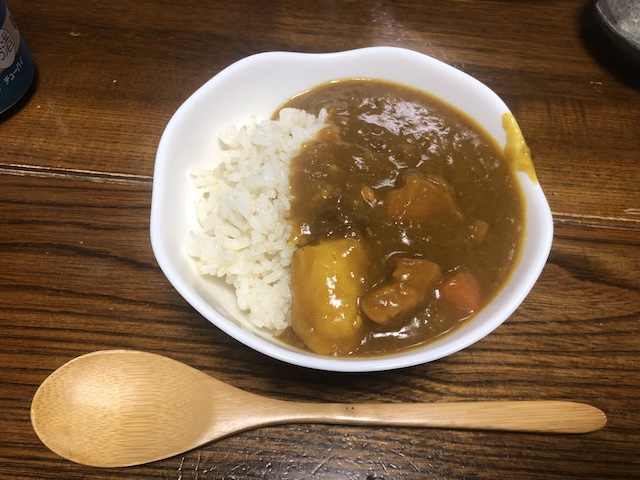
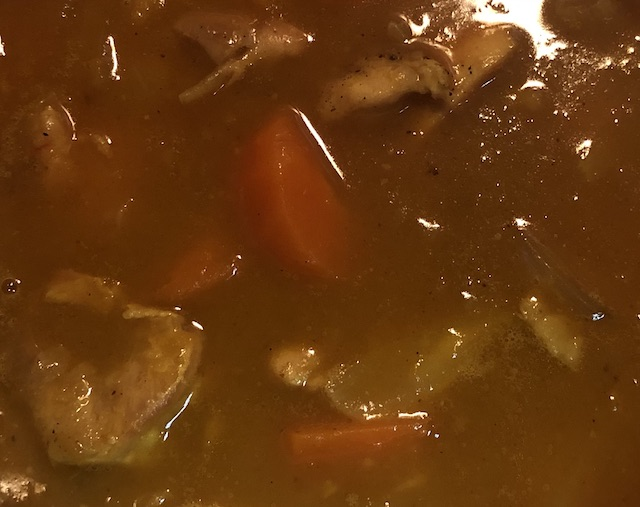
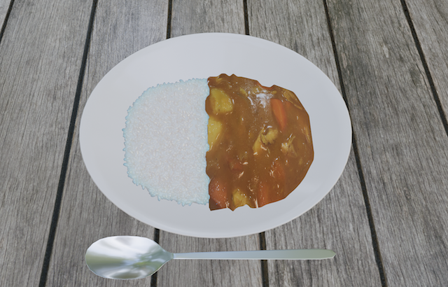
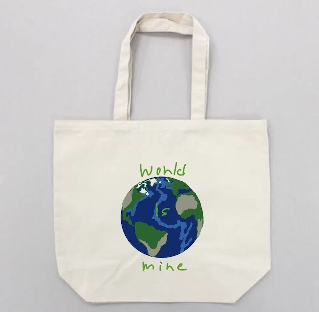

↑ Return to the top page.
↑ Return to the top page.
2020年4月行ったこと
CGごはんコンテスト
3DCGに多少興味があったので参加を決意。
俺はfusion360マスターだし、ある程度3DCGのソフトも触れんんだろ〜と思っていたが、普通に無理だった。MAYAもBlenderも無理だったが、MAYAの方が無理度が高かったのでBlenderを１から学んだ。
もともとCGでカレーを作ることを決めていたので初めてにしてはサクサク進んだが、ある問題にぶつかった。ルーのテクスチャーがネットに転がっていない。
今後二度と検索しないであろう「curry texture」というワードで検索したが駄目だった。
なので作ることにした

美味しかったです。冗談はさておき

3時間半掛けて作ったカレールーをトリミングし、テクスチャーを作った。

はちゃめちゃに時間がかかってしまった（特に本物のカレー）が完成した。
バンフーデザインコンテスト
絵を書くことやデザインに興味があるので参加。
Tシャツデザインコンテスト テーマ：JAPAN

日本の伝統である銭湯をモチーフにした。神奈川県の銭湯利用料金を参考にした。
トートバッグデザインコンテスト テーマ：旅

行こうと思えば世界中どこにだって行けるんだぞという心持ちを表現した。行かねえけど。